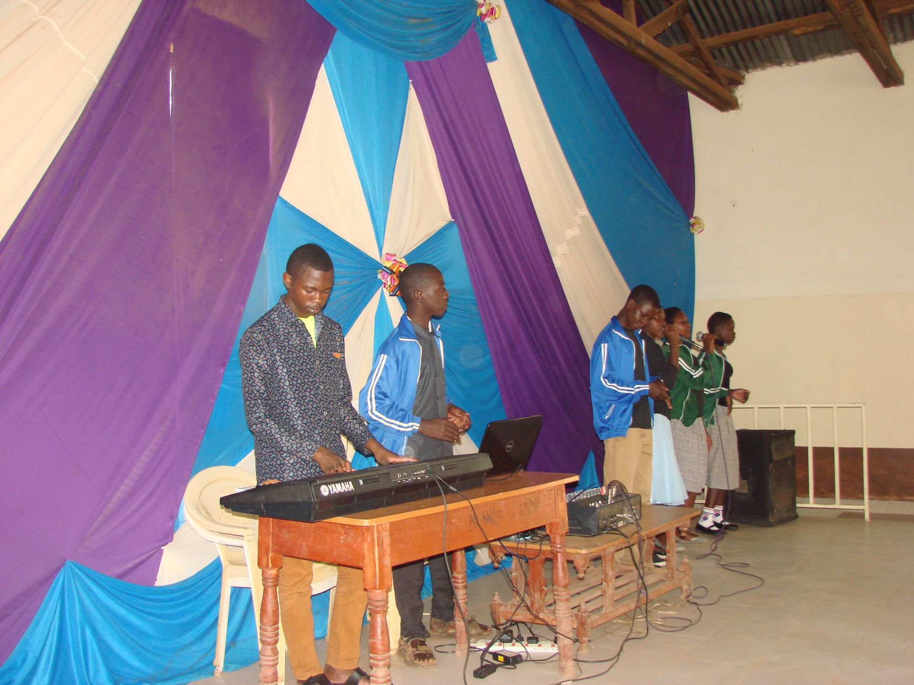
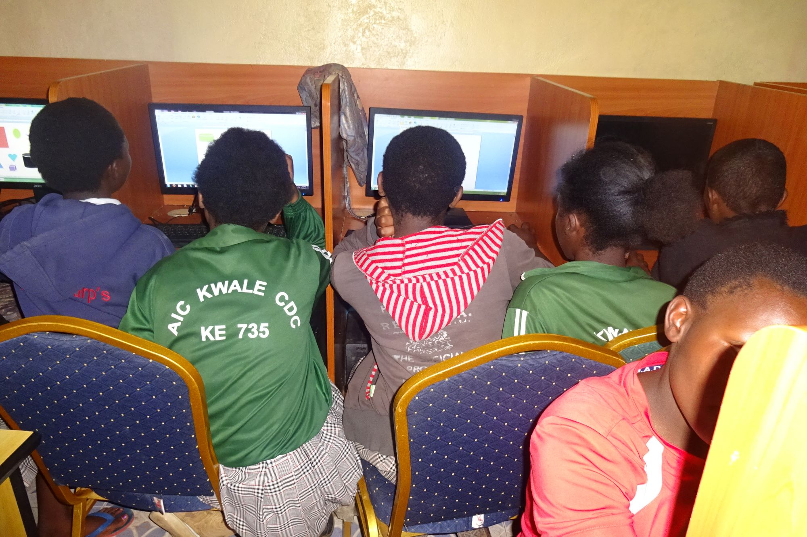

Beneficiary Skills

Our beneficiaries acquire different skills when they are here. Band members marching and doing what they love most when they come to the project. These skills also help them elsewhere where applicable


Beneficiaries playing musical keyboard.
We have a variety of skills which our beneficiaries engage in. Others include: computer skills, playing other musical instrument, Knitting, Hair dressing
